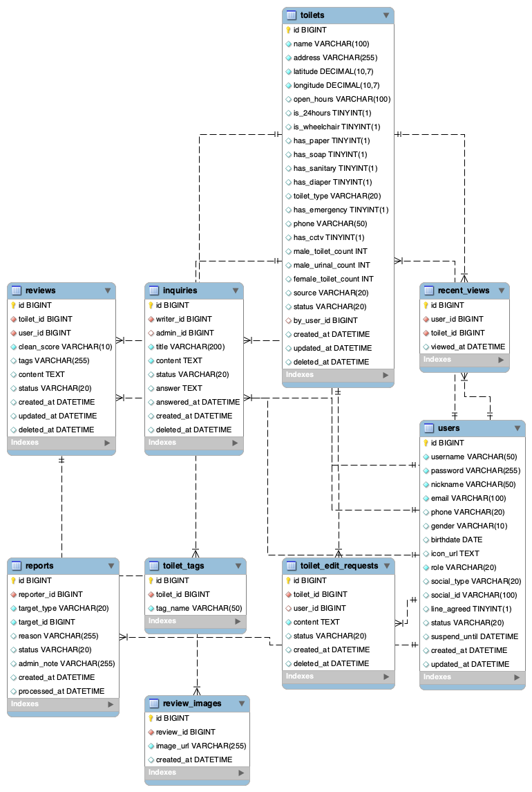

TEAM
チームメンバー
6名のエンジニアが2週間で実装しました。
韓国のトイレが、すぐ見つかる。
韓国を訪れる旅行者のために開発した、トイレマップサービスです。
Naver Maps APIで周辺トイレをリアルタイム表示、
清潔度レビューや設備タグで最適なトイレを素早く見つけられます。
開発期間：2週間 / チーム：6名 / Spring Boot フルスタック
ABOUT
「デマス」は「どこのトイレ」に由来するサービス名です。
韓国旅行中に困りがちなトイレ探しの問題を解決するため、
地図連携・レビュー・タグフィルタ機能を一体化しました。
ユーザーによるレビュー投稿・トイレ情報提供・修正提案を通じて
コミュニティ主導で情報が充実し続けるプラットフォームです。
管理者ダッシュボードで5タブ統合管理を実現しています。
FEATURES
地図検索から管理者ダッシュボードまで、フルスタックで実装しました。
Naver Maps APIと現在地取得を組み合わせ、周辺トイレをリアルタイムで地図に表示。Haversine公式による精密な距離計算で最寄り一覧を提供。
24時間・車椅子対応・おむつ交換台・清潔・多目的トイレなどのタグを複数同時選択してフィルタリング。キーワード・建物名検索にも対応。
一般ログイン・Google OAuth2ソーシャルログインをサポート。パスワード忘れ時のID＋メール認証による3ステップ再設定フローも実装。
清潔度評価・テキスト・画像アップロードに対応したレビュー機能。最新順／高評価順の並び替えと不正レビュー報告機能も搭載。
ユーザーがトイレの新規登録・修正提案が可能。Naver地図クリックで座標を自動入力。管理者の承認後に地図へ反映されます。
会員・報告・トイレ承認・お問い合わせ・修正提案の5タブ統合管理画面。ステータスフィルタ・10件ページネーション・管理者アカウント保護を完備。
ユーザーからの問い合わせ送受信・一覧・詳細閲覧。管理者が回答を入力するとステータスがANSWEREDへ更新されます。
プロフィール編集・パスワード変更・アイコン選択・最近見たトイレ履歴・マイレビュー・マイ問い合わせ一覧をひとまとめに管理。
ROLE_USER / ROLE_ADMINによる権限分離。停止・退会アカウントのログインエラーメッセージ個別表示。管理者アカウントの停止・削除を禁止。
TECH STACK
DESIGN
システムのER図とユースケース図です。

┌────────────────────────────────────────────────────────────────┐ │ ブラウザ (Client) │ │ Thymeleaf + Bootstrap 4.6 + JavaScript │ │ Naver Maps API ／ Geolocation API │ └──────────────────────────┬─────────────────────────────────────┘ │ HTTP Request ┌──────────────────────────▼─────────────────────────────────────┐ │ Spring Boot 4.0.3 (MVC) │ │ │ │ Controller ──▶ Service ──▶ Mapper (MyBatis XML) │ │ │ │ Spring Security ／ CustomUserDetails ／ Google OAuth2 │ │ AuthenticationFailureHandler (停止 / 退会 エラー分岐) │ └──────────────────────────────────┬─────────────────────────────┘ │ SQL ┌──────────────────────────────────▼─────────────────────────────┐ │ MySQL 8 │ │ users ／ toilets ／ reviews ／ review_images │ │ reports ／ inquiries ／ toilet_edit_requests │ │ toilet_tags ／ recent_views │ └────────────────────────────────────────────────────────────────┘
REQUIREMENTS
画面別に整理した機能要求一覧です。
| ID | 機能要求 | 詳細 | 状態 |
|---|---|---|---|
| FR-SCR001-1 | 現在地取得 | Geolocation APIでユーザーの現在地を取得し、地図の中心に設定する | ✅ 完了 |
| FR-SCR001-2 | 周辺トイレ表示 | 現在地から2km以内のトイレをNaver Maps上にマーカーで表示する | ✅ 完了 |
| FR-SCR001-3 | マーカークリック | マーカークリック時にトイレ名・距離・評価の吹き出しを表示する | ✅ 完了 |
| FR-SCR001-4 | 距離計算 | Haversine公式を用いて現在地から各トイレまでの直線距離を計算する | ✅ 完了 |
| FR-SCR001-5 | 最寄りトイレ一覧 | 地図下部に距離順で最寄りトイレリストをスクロール表示する | ✅ 完了 |
| FR-SCR001-6 | ナビゲーション連携 | 「ここへ行く」ボタンでNaver地図アプリのナビを起動するURLスキームを生成する | ✅ 完了 |
| ID | 機能要求 | 詳細 | 状態 |
|---|---|---|---|
| FR-SCR002-1 | 会員登録 | メール・パスワード・ニックネームを入力して新規会員を登録する | ✅ 完了 |
| FR-SCR002-2 | 一般ログイン | メール・パスワードによる認証。BCryptで保存されたパスワードと照合する | ✅ 完了 |
| FR-SCR002-3 | Googleログイン | Google OAuth2 ソーシャルログインを実装。初回ログイン時に自動会員登録する | ✅ 完了 |
| FR-SCR002-4 | ログアウト | セッションを無効化してトップページへリダイレクトする | ✅ 完了 |
| FR-SCR002-5 | パスワードリセット | ID＋メール認証による3ステップのパスワード再設定フローを実装する | ✅ 完了 |
| FR-SCR002-6 | エラーメッセージ分岐 | 停止アカウント・退会アカウント・パスワード不正それぞれに異なるメッセージを表示する | ✅ 完了 |
| FR-SCR002-7 | デフォルトアイコン | プロフィール画像未設定の場合はdefault.svgをフォールバックとして表示する | ✅ 完了 |
| ID | 機能要求 | 詳細 | 状態 |
|---|---|---|---|
| FR-SCR003-1 | トイレ詳細表示 | トイレ名・住所・設備タグ・평균評価・レビュー件数を表示する | ✅ 完了 |
| FR-SCR003-2 | 設備タグ表示 | 車椅子・おむつ交換・24時間・多目的・清潔などのタグをアイコン付きで表示する | ✅ 完了 |
| FR-SCR003-3 | レビュータブ | 詳細ページ内のタブでレビュー一覧を表示。最新順・高評価順の切り替えが可能 | ✅ 完了 |
| FR-SCR003-4 | 地図表示 | トイレの位置をNaver Maps小地図で表示する | ✅ 完了 |
| FR-SCR003-5 | 修正提案ボタン | ログインユーザーが修正提案ページへ遷移するボタンを表示する | ✅ 完了 |
| FR-SCR003-6 | 閲覧履歴記録 | ログインユーザーが詳細ページを開いた際に recent_views へ自動記録する | ✅ 完了 |
| ID | 機能要求 | 詳細 | 状態 |
|---|---|---|---|
| FR-SCR004-1 | 管理者ダッシュボード表示 | 5タブ（会員・報告・トイレ承認・問い合わせ・修正提案）の統合管理画面を表示する | ✅ 完了 |
| FR-SCR004-2 | 会員一覧・フィルタ | 全会員を一覧表示。ACTIVE/SUSPENDED/DELETED等のステータスでフィルタリングする | ✅ 完了 |
| FR-SCR004-3 | 会員停止・復元 | 会員のステータスをSUSPENDED/ACTIVEに変更する。管理者アカウントは対象外 | ✅ 完了 |
| FR-SCR004-4 | 会員削除 | 会員をDELETEDに変更する。管理者アカウントは削除禁止 | ✅ 完了 |
| FR-SCR004-5 | 報告一覧表示 | 報告されたレビューをWAITING/ACCEPTED/REJECTEDでフィルタして一覧表示する | ✅ 完了 |
| FR-SCR004-6 | 報告承認・却下 | 報告を承認するとレビューをis_hidden=trueに。却下するとREJECTEDに変更する | ✅ 完了 |
| FR-SCR004-7 | トイレ承認一覧 | source='USER'のトイレのみをWAITING/APPROVED/REJECTEDでフィルタして表示する | ✅ 完了 |
| FR-SCR004-8 | トイレ承認・却下 | ユーザー提案トイレをAPPROVED/REJECTEDに変更する | ✅ 完了 |
| FR-SCR004-9 | 問い合わせ回答 | 管理者が問い合わせに回答テキストを入力し、ステータスをANSWEREDに変更する | ✅ 完了 |
| FR-SCR004-10 | 修正提案一覧 | 修正提案をWAITING/APPROVED/REJECTEDでフィルタして一覧表示する | ✅ 完了 |
| FR-SCR004-11 | 修正提案承認 | 修正提案を承認すると対象toiletsのデータを更新し、ステータスをAPPROVEDに変更する | ✅ 完了 |
| FR-SCR004-12 | ページネーション | 全タブで10件ずつページネーションを実装。AdminPageResponse<T>で統一する | ✅ 完了 |
| FR-SCR004-13 | 管理者アカウント保護 | 管理者自身のアカウントに停止・削除操作を行えないよう制御する | ✅ 完了 |
| ID | 機能要求 | 詳細 | 状態 |
|---|---|---|---|
| FR-SCR005-1 | 修正提案フォーム表示 | 対象トイレの現在情報を初期値として修正提案フォームを表示する | ✅ 完了 |
| FR-SCR005-2 | 変更内容入力 | 名前・住所・タグ・説明などの修正内容を入力できる | ✅ 完了 |
| FR-SCR005-3 | Naver地図連携 | 地図クリックで座標を自動入力できる | ✅ 完了 |
| FR-SCR005-4 | 提案送信 | toilet_edit_requestsにINSERTしステータスをWAITINGで登録する | ✅ 完了 |
| FR-SCR005-5 | 提案一覧（マイページ） | マイページから自分の修正提案一覧と承認ステータスを確認できる | ✅ 完了 |
| ID | 機能要求 | 詳細 | 状態 |
|---|---|---|---|
| FR-SCR006-1 | レビュー投稿 | 評価（1〜5）・テキスト・画像（複数）を含むレビューを投稿する | ✅ 完了 |
| FR-SCR006-2 | 画像アップロード | レビュー画像をサーバーに保存しreview_imagesに記録する | ✅ 完了 |
| FR-SCR006-3 | レビュー削除 | 自分のレビューのみ削除可能。削除時に関連画像も削除する | ✅ 完了 |
| FR-SCR006-4 | 報告機能 | 不正レビューを理由付きで報告する。同一ユーザーの二重報告を防止する | ✅ 完了 |
| FR-SCR006-5 | 並び替え | 最新順・高評価順・低評価順でレビューを並び替えて表示する | ✅ 完了 |
| ID | 機能要求 | 詳細 | 状態 |
|---|---|---|---|
| FR-SCR007-1 | 問い合わせ送信 | タイトル・内容を入力してお問い合わせをWAITINGで送信する | ✅ 完了 |
| FR-SCR007-2 | 問い合わせ一覧 | マイページから自分の問い合わせ一覧とステータスを確認できる | ✅ 完了 |
| FR-SCR007-3 | 問い合わせ詳細 | 問い合わせ詳細と管理者の回答を確認できる | ✅ 完了 |
| FR-SCR007-4 | 管理者回答 | 管理者が回答入力後にステータスをANSWEREDに更新する | ✅ 完了 |
| FR-SCR007-5 | ステータス表示 | WAITING/ANSWERED を色分けバッジで一覧表示する | ✅ 完了 |
| ID | 機能要求 | 詳細 | 状態 |
|---|---|---|---|
| FR-SCR008-1 | プロフィール編集 | ニックネーム・プロフィール画像を変更できる | ✅ 完了 |
| FR-SCR008-2 | パスワード変更 | 現在パスワードを確認後に新しいパスワードへ変更する | ✅ 完了 |
| FR-SCR008-3 | アイコン選択 | プリセットアイコンから選択できる | ✅ 完了 |
| FR-SCR008-4 | 最近見たトイレ | recent_viewsから閲覧履歴を取得し一覧表示する | ✅ 完了 |
| FR-SCR008-5 | マイレビュー | 自分が投稿したレビュー一覧を表示する | ✅ 完了 |
| FR-SCR008-6 | マイ問い合わせ | 自分のお問い合わせ一覧を表示する | ✅ 完了 |
| FR-SCR008-7 | 会員退会 | 確認ダイアログ後にステータスをDELETEDに変更しセッションを無効化する | ✅ 完了 |
| ID | 機能要求 | 詳細 | 状態 |
|---|---|---|---|
| FR-SCR009-1 | キーワード検索 | トイレ名・住所・建物名のキーワード検索を実装する | ✅ 完了 |
| FR-SCR009-2 | タグフィルタ | 複数タグを同時選択してフィルタリングする（AND条件） | ✅ 完了 |
| FR-SCR009-3 | 距離フィルタ | 現在地から500m・1km・2km以内でフィルタリングする | ✅ 完了 |
| FR-SCR009-4 | 検索結果一覧 | 検索条件に一致するトイレを距離順で一覧表示する | ✅ 完了 |
| ID | 機能要求 | 詳細 | 状態 |
|---|---|---|---|
| FR-SCR010-1 | 新規トイレ登録フォーム | 名前・住所・設備タグ・説明を入力する新規登録フォームを表示する | ✅ 完了 |
| FR-SCR010-2 | 地図クリック座標入力 | Naver地図をクリックした位置のlat/lngを座標フィールドに自動入力する | ✅ 完了 |
| FR-SCR010-3 | 提案送信 | source='USER', status='WAITING'でtoiletsにINSERTし管理者承認待ちとする | ✅ 完了 |
| FR-SCR010-4 | 提案状況確認 | マイページから自分の登録提案のステータスを確認できる | ✅ 完了 |
DATABASE
MySQL 8 を使用。9テーブルで構成されています。
| カラム | 型 | 説明 |
|---|---|---|
| id | BIGINT PK | ユーザーID |
| VARCHAR UNIQUE | メールアドレス | |
| password | VARCHAR | BCryptハッシュ |
| nickname | VARCHAR | ニックネーム |
| profile_image | VARCHAR | プロフィール画像パス |
| role | ENUM | ROLE_USER / ROLE_ADMIN |
| status | ENUM | ACTIVE / SUSPENDED / DELETED |
| social_type | VARCHAR | GOOGLE / null |
| created_at | DATETIME | 登録日時 |
| カラム | 型 | 説明 |
|---|---|---|
| id | BIGINT PK | トイレID |
| name | VARCHAR | トイレ名 |
| address | VARCHAR | 住所 |
| lat / lng | DOUBLE | 緯度・経度 |
| source | ENUM | PUBLIC_API / USER |
| status | ENUM | WAITING / APPROVED / REJECTED |
| description | TEXT | 説明 |
| created_at | DATETIME | 登録日時 |
| カラム | 型 | 説明 |
|---|---|---|
| id | BIGINT PK | レビューID |
| toilet_id | BIGINT FK | toilets.id |
| user_id | BIGINT FK | users.id |
| content | TEXT | レビュー本文 |
| rating | INT | 評価（1〜5） |
| is_hidden | BOOLEAN | 非表示フラグ |
| created_at | DATETIME | 投稿日時 |
| カラム | 型 | 説明 |
|---|---|---|
| id | BIGINT PK | 画像ID |
| review_id | BIGINT FK | reviews.id |
| image_url | VARCHAR | 画像保存パス |
| カラム | 型 | 説明 |
|---|---|---|
| id | BIGINT PK | タグID |
| toilet_id | BIGINT FK | toilets.id |
| tag_name | VARCHAR | タグ名（wheelchair等） |
| カラム | 型 | 説明 |
|---|---|---|
| id | BIGINT PK | 報告ID |
| review_id | BIGINT FK | reviews.id |
| user_id | BIGINT FK | users.id |
| reason | TEXT | 報告理由 |
| status | ENUM | WAITING / ACCEPTED / REJECTED |
| created_at | DATETIME | 報告日時 |
| カラム | 型 | 説明 |
|---|---|---|
| id | BIGINT PK | 問い合わせID |
| user_id | BIGINT FK | users.id |
| title | VARCHAR | タイトル |
| content | TEXT | 本文 |
| answer | TEXT | 管理者回答 |
| status | ENUM | WAITING / ANSWERED |
| created_at | DATETIME | 送信日時 |
| answered_at | DATETIME | 回答日時 |
| カラム | 型 | 説明 |
|---|---|---|
| id | BIGINT PK | 修正提案ID |
| toilet_id | BIGINT FK | toilets.id |
| user_id | BIGINT FK | users.id |
| new_name | VARCHAR | 提案名称 |
| new_address | VARCHAR | 提案住所 |
| new_description | TEXT | 提案説明 |
| status | ENUM | WAITING / APPROVED / REJECTED |
| created_at | DATETIME | 提案日時 |
| カラム | 型 | 説明 |
|---|---|---|
| id | BIGINT PK | 履歴ID |
| user_id | BIGINT FK | users.id |
| toilet_id | BIGINT FK | toilets.id |
| viewed_at | DATETIME | 閲覧日時 |
URL DESIGN
RESTful規則に基づくエンドポイント一覧です。
| メソッド | URL | 説明 | 権限 |
|---|---|---|---|
| GET | / | 地図メインページ | 全員 |
| GET | /login | ログインページ | 未認証 |
| POST | /login | ログイン処理 | 未認証 |
| GET | /logout | ログアウト処理 | 認証済 |
| GET | /register | 会員登録ページ | 未認証 |
| POST | /register | 会員登録処理 | 未認証 |
| GET | /password-reset | パスワードリセット（Step1〜3） | 全員 |
| POST | /password-reset/verify | メール認証確認 | 全員 |
| GET | /toilets/{id} | トイレ詳細ページ | 全員 |
| GET | /toilets/search | トイレ検索ページ | 全員 |
| GET | /toilets/new | 新規トイレ提案ページ | ROLE_USER |
| POST | /toilets | 新規トイレ提案送信 | ROLE_USER |
| GET | /toilets/{id}/edit-request | 修正提案フォームページ | ROLE_USER |
| POST | /toilets/{id}/edit-request | 修正提案送信 | ROLE_USER |
| POST | /reviews | レビュー投稿 | ROLE_USER |
| DELETE | /reviews/{id} | レビュー削除 | 本人 |
| POST | /reports | レビュー報告送信 | ROLE_USER |
| GET | /inquiries | お問い合わせ一覧 | ROLE_USER |
| POST | /inquiries | お問い合わせ送信 | ROLE_USER |
| GET | /inquiries/{id} | お問い合わせ詳細 | 本人 |
| GET | /my | マイページトップ | ROLE_USER |
| PUT | /my/profile | プロフィール更新 | ROLE_USER |
| PUT | /my/password | パスワード変更 | ROLE_USER |
| DELETE | /my | 会員退会 | ROLE_USER |
| GET | /admin | 管理者ダッシュボード | ROLE_ADMIN |
| GET | /admin/members | 会員管理タブ（API） | ROLE_ADMIN |
| PUT | /admin/members/{id}/status | 会員ステータス変更 | ROLE_ADMIN |
| DELETE | /admin/members/{id} | 会員削除 | ROLE_ADMIN |
| GET | /admin/reports | 報告管理タブ（API） | ROLE_ADMIN |
| PUT | /admin/reports/{id}/status | 報告承認・却下 | ROLE_ADMIN |
| GET | /admin/toilets | トイレ承認タブ（API） | ROLE_ADMIN |
| PUT | /admin/toilets/{id}/status | トイレ承認・却下 | ROLE_ADMIN |
| GET | /admin/inquiries | 問い合わせタブ（API） | ROLE_ADMIN |
| POST | /admin/inquiries/{id}/answer | 問い合わせ回答 | ROLE_ADMIN |
| GET | /admin/edit-requests | 修正提案タブ（API） | ROLE_ADMIN |
| PUT | /admin/edit-requests/{id}/status | 修正提案承認・却下 | ROLE_ADMIN |
UI / SCREENS
各画面の概要です。スクリーンショットは docs/screenshots/ フォルダに画像を追加してください。
DEMO VIDEO
デモ動画をここに埋め込んでください
YouTube URL または docs/demo.mp4 を追加
TEAM
6名のエンジニアが2週間で実装しました。
TROUBLESHOOTING
開発中に直面した主な技術的課題と、その解決プロセスです。
PageResponse<T> は items / page フィールド名を使用していたが、
dashboard.html の JavaScript が content / number を期待しており、
フロントエンドでデータが一切表示されない問題が発生。
AdminPageResponse<T> DTO を新規作成し、
content / number / totalPages / size / totalCount フィールド名でフロントエンドの期待値に統一。
既存の共通コードを変更せずに解決。
th:if="${!toilet.isWheelchair}" の式評価時、Boolean Wrapper 型が null の場合に
EL1001E: Type conversion problem が発生。Spring EL では null の Boolean を
! で反転しようとするとエラーになる。
!= true パターンへ変更。
th:if="${toilet.isWheelchair != true}" とすることで、
null と false どちらの場合も安全に処理できる null-safe な書き方を採用。
source カラムを活用し、
AdminMapper.xml の WHERE 句に AND source = 'USER' 条件を追加。
ユーザー提報データのみを管理画面へ表示するよう修正し解決。
CustomUserDetails で isEnabled()（SUSPENDED → false）と
isAccountNonLocked()（DELETED → false）を分離。
カスタム AuthenticationFailureHandler で例外種別ごとに
?error=suspended / ?error=deleted パラメータを付与し、
フロントエンドで状態別トーストメッセージを表示。